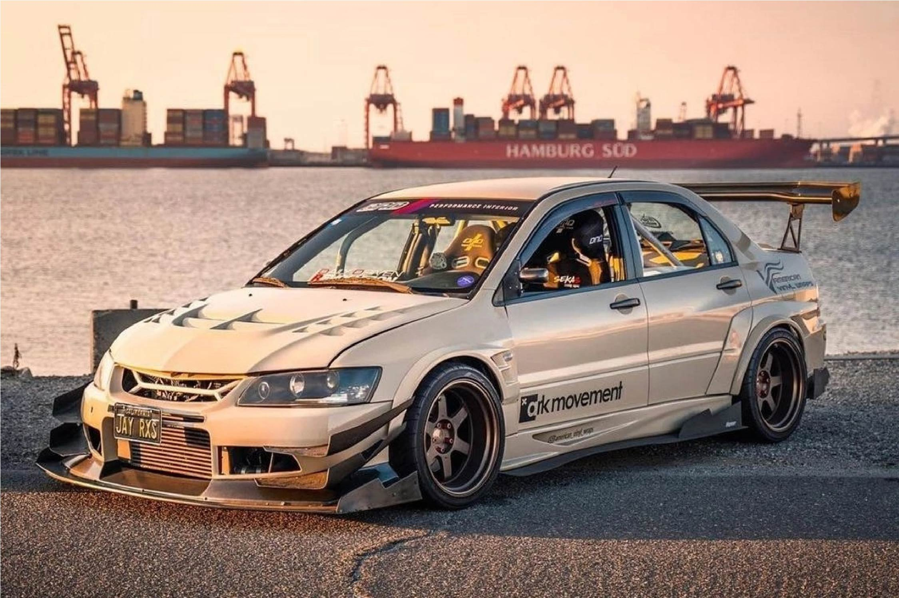

MITSUBISHI
История создания концерна Mitsubishi началась в 1868 году: именно тогда Ятаро Ивасаки начал работать в пароходной компании Tsukumo Shokai, которой владел самурайский клан Тоса (Tosa). Приобретенный опыт работы позволил Ятаро Ивасаки открыть в 1870-х годах собственную судоходную компанию. Пережив несколько переименований, компания в итоге получила имя Mitsubishi Mail Steamship Company, которое переводится как «Мицубиси» – почтовая пароходная компания». Она занималась строительством и ремонтом судов, а также пароходными перевозками.
Новый этап в истории компании начался в 1917 году, когда потомок Ятаро Ивасаки по имени Кайота Ивасаки перепрофилировал бизнес и основал автомобильный концерн Mitsubishi Motors.
Логотип Mitsubishi появился в результате объединения двух родовых гербов: герба рода Ивасаки (три яруса ромбов) и герба рода Тоса (три дубовых листка, сросшихся в одной точке). Эмблема имеет важное смысловое значение: три бриллианта символизируют три принципа работы компании – честность, ответственность перед обществом, открытость для международного сотрудничества.
Большинство Митцов в JDM - Lancer. Намного круче, когда это еще и Evolution 9. Это классика, где сочетаются прекрасный внешний вид и отличные технические характеристики. Изредка можно встретить, например, FTO или Eclipse. У этих моделей можно отметить хорошую динамику и агрессивный дизайн кузова.